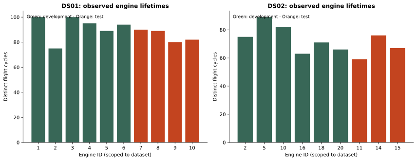
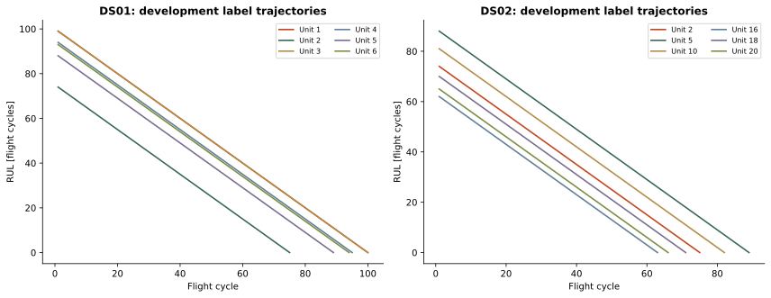
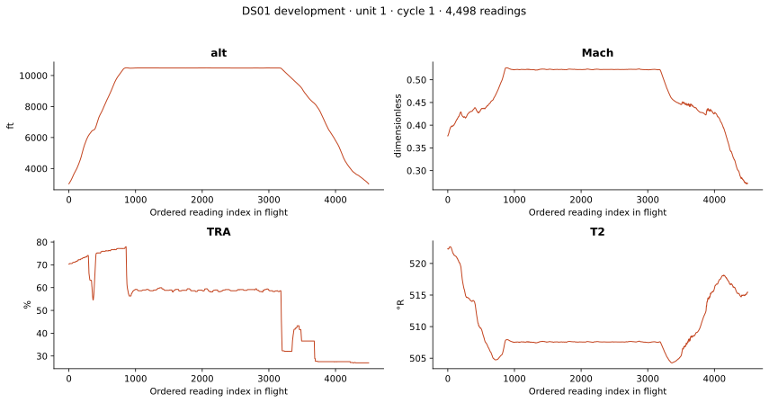
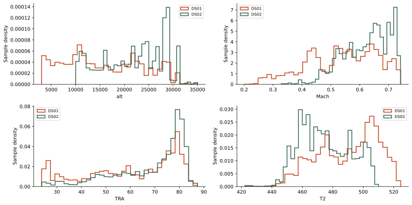
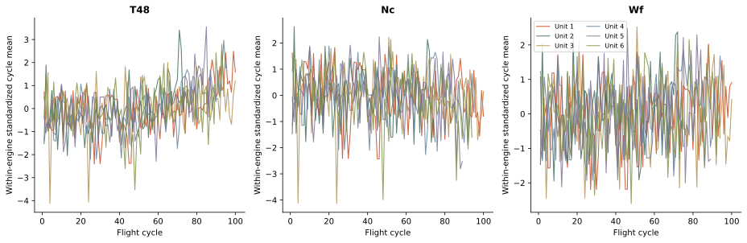
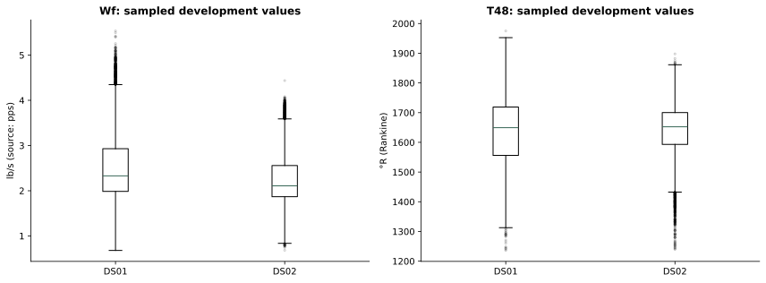
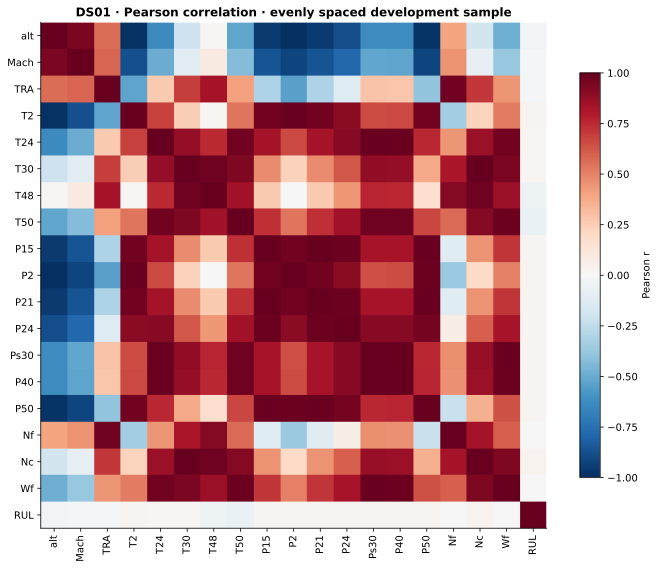

A reading
One aligned operating/sensor observation. Stored row order is available; explicit timestamps are not.
TASK 03 / DATA UNDERSTANDING
Before we predict,
we need to understand.
Two N-CMAPSS subsets. A guided investigation of engine histories, flight conditions, and what our labels actually mean.
Repeated measurements give rich trajectories.
They do not create millions of independent engines.
One aligned operating/sensor observation. Stored row order is available; explicit timestamps are not.
Many readings with the same engine and cycle. Shared keys are expected, not duplicate errors.
Repeated flights until simulated end-of-life. Keep engines separate when validating models.
| Subset | Partition | Readings | Engines | Flights | Lifetime range (cycles) |
|---|---|---|---|---|---|
| DS01 | dev | 4,906,636 | 6 | 553 | 75–100 |
| DS01 | test | 2,735,232 | 4 | 341 | 80–90 |
| DS02 | dev | 5,263,447 | 6 | 446 | 63–89 |
| DS02 | test | 1,253,743 | 3 | 202 | 59–76 |

| Subset | Split | Unit | Flight class | Readings | Flights | RUL range |
|---|---|---|---|---|---|---|
| DS01 | dev | 1 | 1 | 433,325 | 100 | 0–99 |
| DS01 | dev | 2 | 3 | 1,049,088 | 75 | 0–74 |
| DS01 | dev | 3 | 2 | 893,054 | 100 | 0–99 |
| DS01 | dev | 4 | 1 | 414,172 | 95 | 0–94 |
| DS01 | dev | 5 | 3 | 1,280,147 | 89 | 0–88 |
| DS01 | dev | 6 | 2 | 836,850 | 94 | 0–93 |
| DS01 | test | 7 | 1 | 392,585 | 90 | 0–89 |
| DS01 | test | 8 | 2 | 800,294 | 89 | 0–88 |
| DS01 | test | 9 | 1 | 351,683 | 80 | 0–79 |
| DS01 | test | 10 | 3 | 1,190,670 | 82 | 0–81 |
| DS02 | dev | 2 | 3 | 853,142 | 75 | 0–74 |
| DS02 | dev | 5 | 3 | 1,033,420 | 89 | 0–88 |
| DS02 | dev | 10 | 3 | 952,711 | 82 | 0–81 |
| DS02 | dev | 16 | 3 | 765,295 | 63 | 0–62 |
| DS02 | dev | 18 | 3 | 890,719 | 71 | 0–70 |
| DS02 | dev | 20 | 3 | 768,160 | 66 | 0–65 |
| DS02 | test | 11 | 3 | 663,495 | 59 | 0–58 |
| DS02 | test | 14 | 1 | 156,778 | 76 | 0–75 |
| DS02 | test | 15 | 2 | 433,470 | 67 | 0–66 |
Shared unit numbers across subsets do not establish identity or independence. Filter controls affect this table only.
Every audited flight follows the same countdown convention.
A final observed cycle of 100 and a current cycle of 1 gives RUL 99. RUL stays constant within each flight and reaches zero on the final cycle.
The final lifetime is known retrospectively. Giving it to a model as an input would leak the answer.

Altitude, Mach, throttle, and temperature change within a flight. Sensor changes can reflect those changes as well as degradation.


4 operating conditions + 14 measured sensor channels. “Measured” describes the simulator channel type; engine responses are simulated.
Virtual sensors, hidden health modifiers, labels, and metadata require different handling. The notebook documents each variable and unit.
Following the lecturer’s Dataset Scales slides 3–4 and feature-table notebook. Storage dtype and statistical meaning are separate. Discrete/continuous is also separate from measurement scale.
| Variable | Meaningful scale | Why |
|---|---|---|
| unit | Nominal | An ID, even when stored as float64 |
| Fc | Ordinal | Short < medium < long; unequal category gaps |
| hs | Nominal | Healthy/degraded labels, not a physical quantity |
| cycle | Interval index · discrete | Differences count flights; index origin is chosen |
| RUL | Ratio · discrete | Count of remaining cycles; meaningful zero |
| T2 / T24 / T48 | Ratio · continuous | Absolute temperature in Rankine |
| alt | Interval · continuous | Altitude relative to a datum |
| P2 / stall margins | Unconfirmed | Source definition or zero-point convention needs checking |
Throttle and simulator-modifier interval classifications are working interpretations. The full lecturer-style feature table labels exact counts/ranges and sampled unique counts.



665,475,726 numeric cells scanned.
No NaN or infinite values found. That alone does not prove the data is error-free.
Arrays aligned; invalid category codes: 0; invalid IDs/cycles: 0
Scope: Full metadata + all auxiliary codes
P2 definition/unit requires source confirmation; file metadata does not prove physical units.
NaN: 0; infinity: 0
Scope: Every numeric cell in both files
Sentinel values and gaps in physical time are not established by NaN checks.
Adjacent exact duplicates: 0; sampled exact duplicates: 0
Scope: All adjacent rows + 12,000 evenly spaced rows per partition
All non-adjacent duplicates were not exhaustively checked; repeated flight keys are valid.
49 dataset-variable pairs have sampled IQR flags; no rows removed
Scope: Full ranges + development-sample IQR screens
Extreme values are not proven errors; no independent physical ground truth.
Static simulation data; no calendar timestamp column
Scope: Provided sources and metadata
Download version/terms remain to be recorded; current operational relevance is unvalidated.
Engine overlap: {'DS01': [], 'DS02': []}; cycle/label/health checks flagged: 0
Scope: All engine-flight aggregates + full auxiliary scan
Both partitions were inspected for understanding; keep test data out of later tuning.
No raw values removed or imputed. Global non-adjacent duplicates have not been exhaustively checked. Accuracy against physical reference measurements is unverified. The P2 sensor definition/unit and Kaggle version/terms remain open.
Start with DS01. Define when a prediction is made. Preserve engines and chronology. Then establish a baseline.
FOLLOW THE EVIDENCE
The notebook explains each step. The report collects the findings. Small exported tables keep every number traceable.
Source files: N-CMAPSS_DS01-005.h5 and N-CMAPSS_DS02-006.h5. Analysis date: 2026-10-22. Read-only chunks of 100,000 rows; sample size 12,000 per partition.
Reference: accompanying seven-page April 2020 preprint (DS02-focused), Tables 1–4 and pp. 3–5; example notebook credited to Manuel Arias; wider collection: Arias Chao et al. (2021). Real flight profiles drive simulated degradation and sensor responses.
Task scope follows the supplied task PDF, p. 1. The scales follow the supplied Dataset Scales PPTX (slides 3–4) and feature-description example notebook. The six quality dimensions follow the lecturer excerpt provided by the team. Source version/redistribution rights remain unverified. AI assistance disclosure.
Run the notebook, then python scripts/build_task3_report.py. Generated values come from reports/results/task3_summary.json and the exported tables, not live engine telemetry.